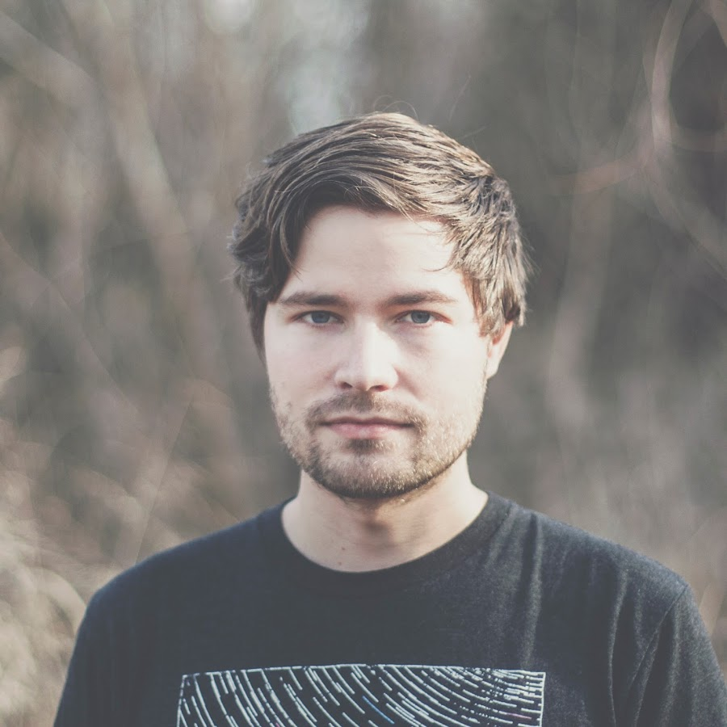
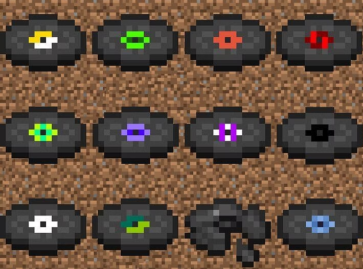
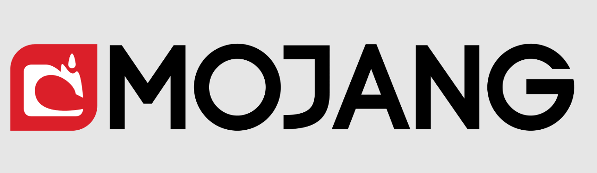
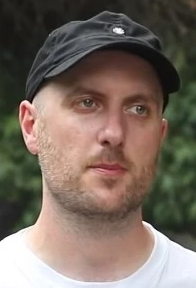
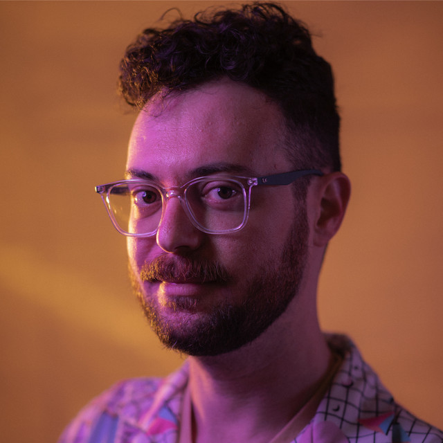

Siin lehel tuleb juttu Minecrafti plaatide ajaloost.
Eessõnaks
Jutt keskendub peamiselt Minecrafti Java versioonile, sest see on kõige vanem ja tuntum mänguversioon. Me ei süvene väga mängu enda ajalukku, vaid pigem Minecrafti muusikaplaatide ajalukku.
Minecrafti muusikaplaadid (Music discs) on mängus esemed, millega saab mängija mängida lugusid. Lugude mängimiseks on vaja plaadi mängimis plokki ehk jukebox'i. Lood on loodud peamiselt ühe helilooja poolt, kes on Daniel "C418" Rosenfeld. Teised heliloojad on Lena Raine, Samuel Åberg ja Aaron Cherof.
Ajalugu
Aastal 2009 palkas Markus "Notch" Persson, Minecrafti looja, endale appi helikujundajaks vabakutselise Daniel "C418" Rosenfeldi. Tema ülesanne oli luua Minecraftile helisid ja muusikat, kasutades mitte väga võimsat Java helimootorit. Lõpuks, aastal 2010 suvel, kui tuli välja Minecraft Alpha versioon 1.0.14, lisati mängu esimesed 2 muusikaplaati (tol ajal olid nad mängus nimega "records", aga kiiresti nimetati ümber "Music discs"), milleks olid "cat" ja "13".

2011. aastal sai Rosenfeldil (edaspidi C418) valmis esimene Minecrafti soundtrack "Alpha", milles sisaldusid ka need kaks lugu "cat" ja "13" (albumis oli 13 nimega "Thirteen"). Sama aasta suvel kuulutas C418 välja, et mängu tuleb veel plaate. Minecraft Java Edition Beta 1.9 Prerelease 2 tõi mängu 9 uut muusikaplaati: "11", "blocks", "chirp", "far", "mall", "mellohi", "stal", "strad" ja "ward". Hilisem versioon 1.4.3/1.4.4 lisas mängu viimase lubatud plaadi nimega "wait".

Siis oli muusikaplaatide poolest mängus pikk paus, tõsi, tagataustal muudeti koodis, kuidas plaat mängus töötab või kuidas toimub helifailide lahtikrüptimine, aga uut muusikalist sisu ei loodud mängule. Siit edasi C418 ei tee enam mängule muusikat, sest Microsoft, kes ostis mängu ära mängu loojalt Markus Perssonilt, tahtis osta ära C418 muusika (Minecrafti muusika ei olnud kunagi Mojangi omand, Mojang on siis Markus Perssoni ettevõtte, vaid kuulus eksklusiivselt C418-le, ta lihtsalt andis loa seda kasutada). C418 keeldus ja lõpetas oma teenuste pakkumise Minecraftile.

Kuni lõpuks tuli aastal 2020 versioon 1.16, mis lisas mängu uue plaadi, mis oli tehtud uue tegija poolt: "Pigstep" - Lena Raine. Versioon 1.18 tõi mängu jälle sama tegija poolt uue plaadi "otherside". Kõige uuemad teosed nagu "5", tehtud Samuel Åbergi poolt, ja "Relic" - Aaron Cherofi poolt, lisati mängu aastatel 2022 (versioon 1.19.0) ja 2023 (versioon 1.20.0).

